Design for democracy
PROJECT DESCRIPTION
Design for democracy is a transformation design & social service design project.
The goal is to create a developed design strategy to improve the election environment in the Country.
During the research process, I accomplish multiple stages of research including field research, interview and creating surveys.
With the application of human center design theory, I created a detailed executable design strategy for immigrant voting legislation campaign.
ORIGINAL WORK
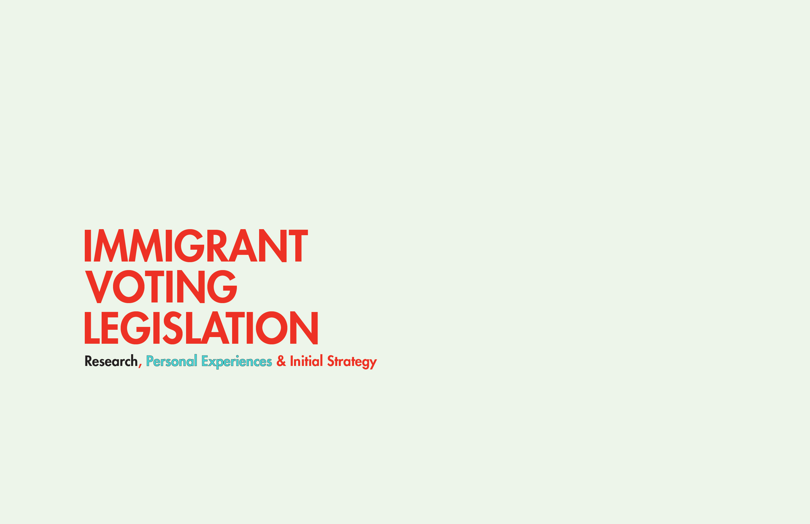
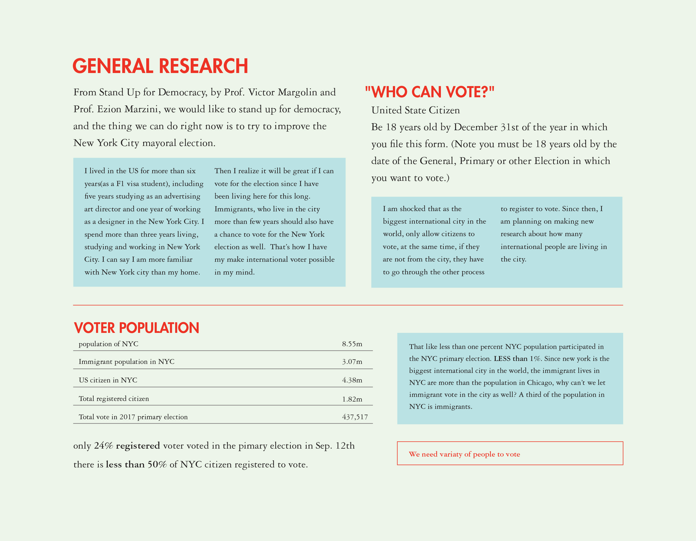
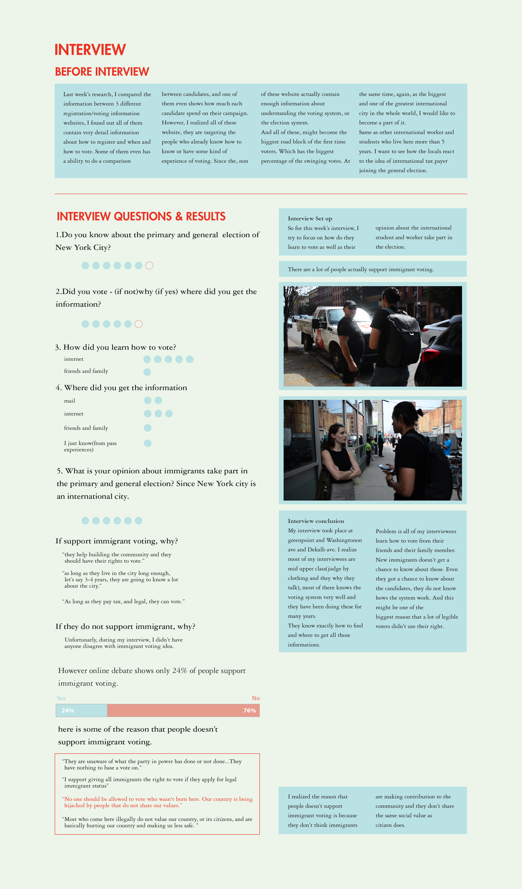
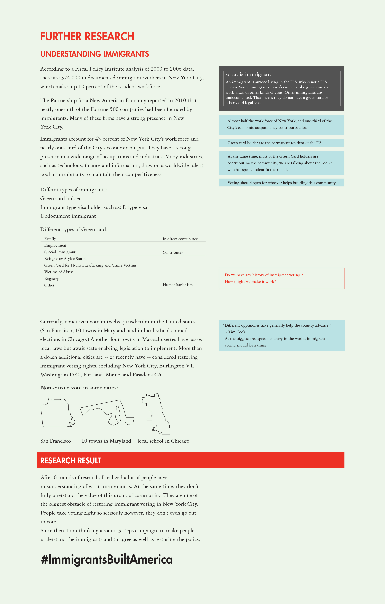

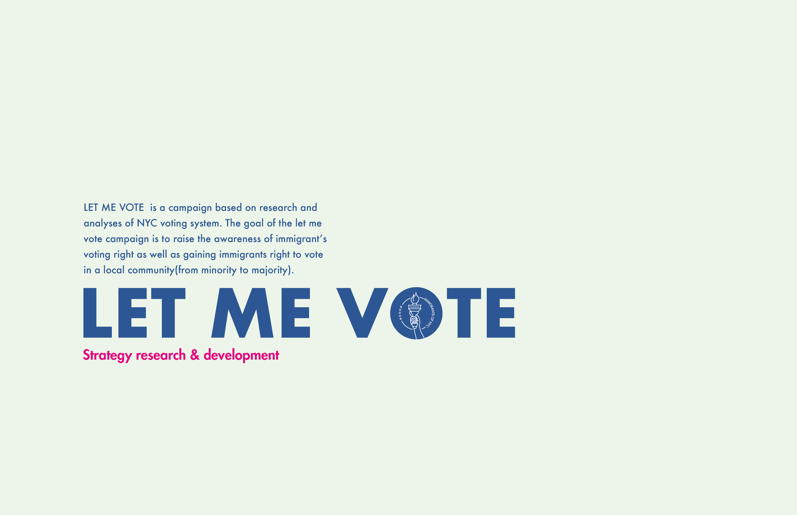
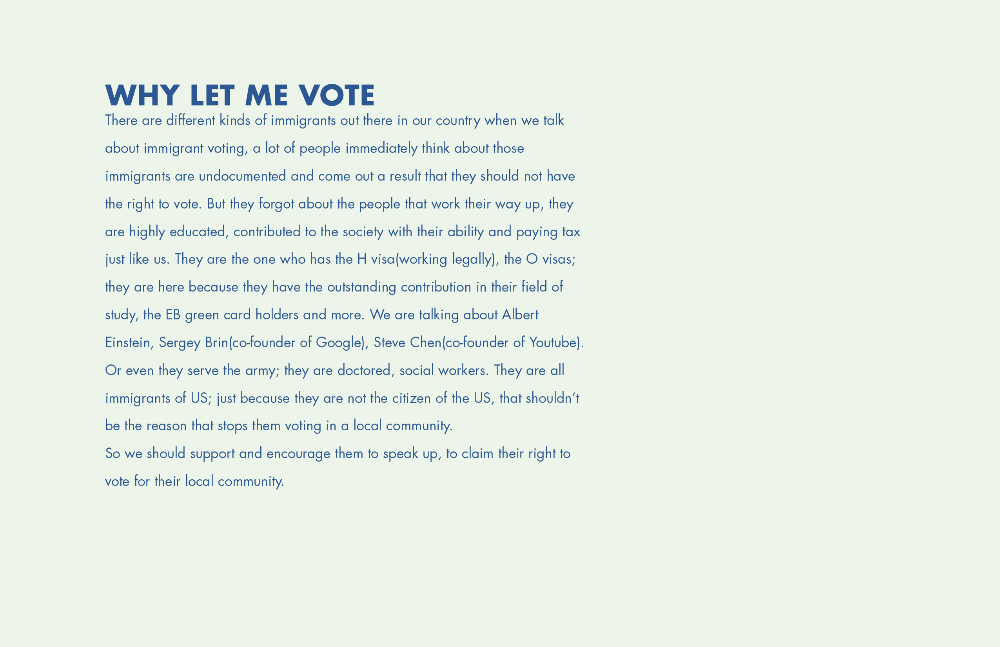
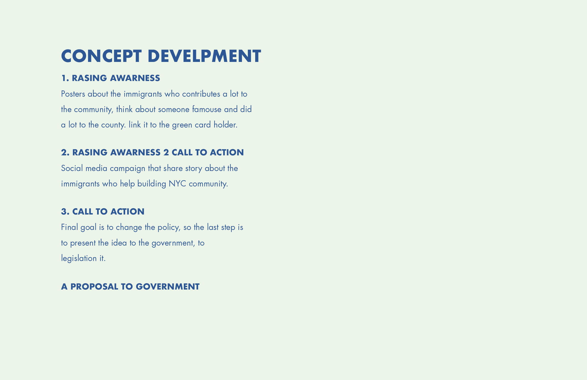
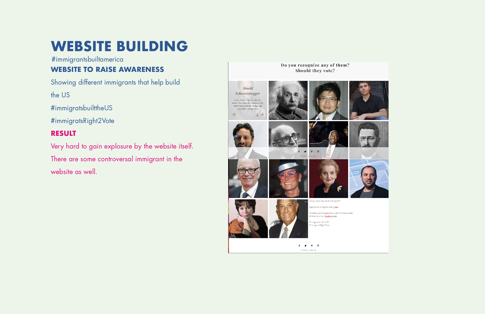
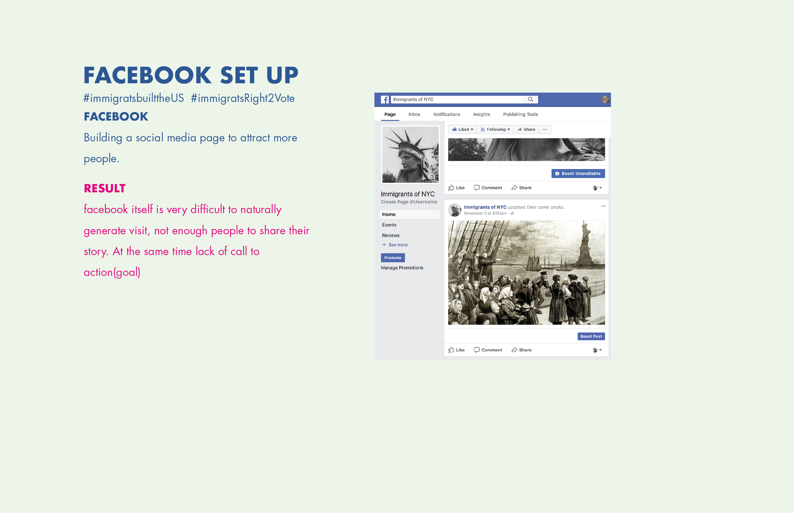
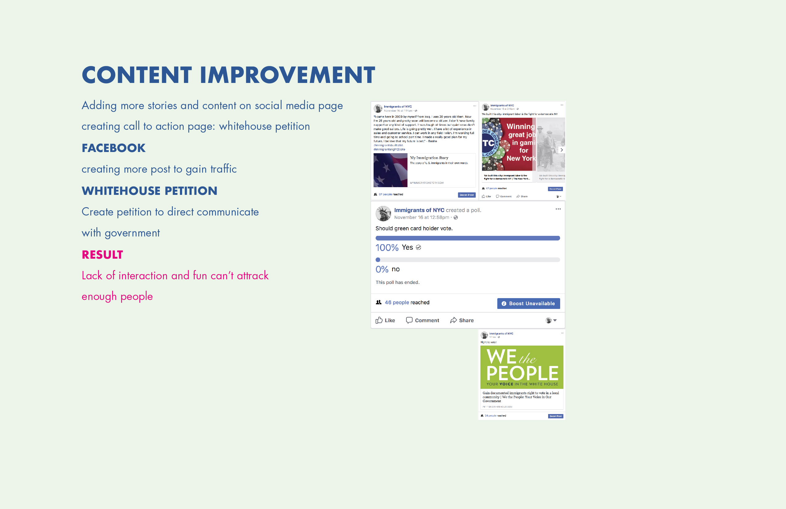
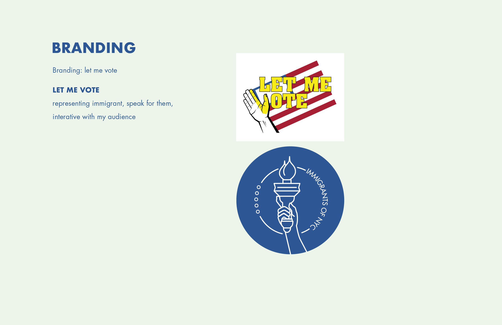
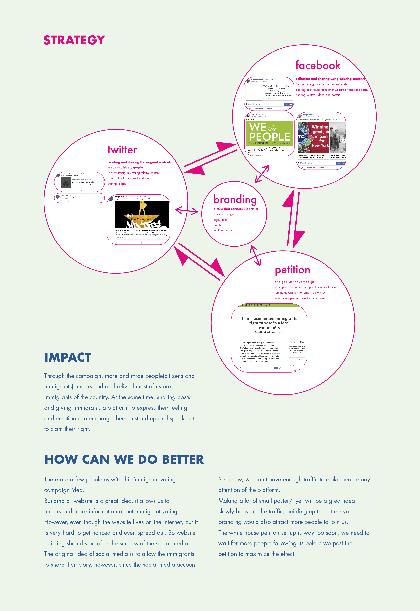